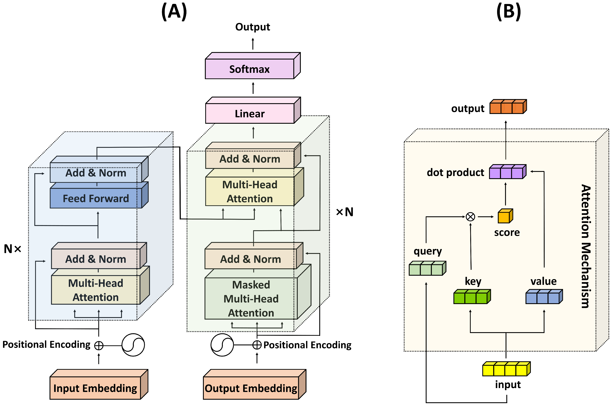

Transformers
The Transformers ist eine Architektur von tiefen neuronallen Netzten, die von Vaswani et al. 2017 entwickelt wurde. Sie wurde ursprünglich für die Verarbeitung von Texten entwickelt, hat sich aber auch in anderen Bereichen wie der Bildverarbeitung als sehr effektiv erwiesen. Die Architektur besteht aus einem Encoder und einem Decoder, die beide aus einer Reihe von Schichten bestehen. Die Schichten bestehen aus Multi-Head Attention Mechanismen und Feed-Forward-Netzwerken. Die Transformer-Architektur hat die Fähigkeit, lange Abhängigkeiten in den Daten zu modellieren und ist daher sehr effektiv bei der Verarbeitung von Sequenzen.
Bausteine

Die Hauptbausteine des Transformers sind:
-
emebeddings: Eine Repräsentation der Wörter in einem Satz. Diese Repräsentationen werden in den Modellen verwendet, um die Beziehungen zwischen den Wörtern in einem Satz zu modellieren.
-
Multi-Head Attention: Ein Mechanismus, der es dem Modell ermöglicht, Beziehungen zwischen Wörtern in einem Satz zu modellieren.
-
Masked Multi-Head Attention: Ein Mechanismus, der es dem Modell ermöglicht, die Position der Wörter in einem Satz zu berücksichtigen.
-
Feed-Forward-Netzwerk: Ein Netzwerk, das es dem Modell ermöglicht, nicht lineare Beziehungen zwischen den Wörtern in einem Satz zu modellieren.
-
Positional Encoding: Ein Mechanismus, der es dem Modell ermöglicht, die Position der Wörter in einem Satz zu berücksichtigen.
-
Layer Normalization: Ein Mechanismus, der es dem Modell ermöglicht, die Aktivierung der Neuronen in den Schichten zu normalisieren.